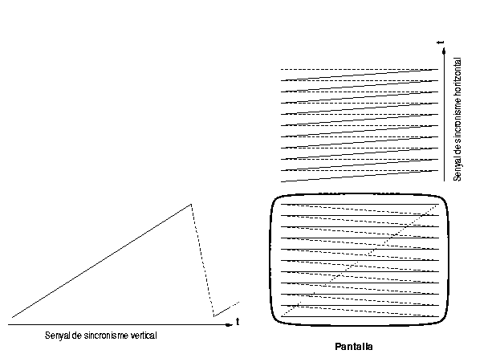

Per tal de presentar una imatge completa, els dispositius raster exciten aquestes dues bobines amb dues senyals en forma de rampa, però usant una freqüència molt més elevada per la deflecció horitzontal que per la vertical. Això fa que el raig recorri la pantalla al llarg de línies horitzontals equiespaiades (les línies de raster, o d'escombrat. La següent figura mostra esquemàticament aquest procés:
|  |
Una circuiteria especial desconnecta el feix d'electrons durant els retorns cap enrera (pintats en línies de punts). Com cada imatge que es forma en la nostra retina la veiem durant un instant més que la exposició real a la llum ("retenció de la retina"), si la freqüència de les senyals de sincronisme és prou gran, no percebrem un punt movent-se frenèticament per tota la pantalla, sino que veurem linies estàtiques pintades a la pantalla, exactament igual que si estiguessin uniformement il·luminades tota l'estona. Aquest és el mateix fenòmen que fa que al cinema no veiem una sèrie de figures fixes saltant de posició, sino que tinguem la il·lusió de que es mouen de forma contínua. És també el mateix que fa que quan movem ràpidament una lot veiem un dibuix suspès en l'aire. Si a més les línies horitzontals estàn prou juntes, l'ull, a la distància, no les distingirà (L'ull humà no resol normalment angles inferiors a 1 minut. És a dir que veu dos punts com el mateix si l'angle format pels dos raigs des de l'ull fins cada un dels dos punts es menor que un minut. Veiem doncs perquè si la pantalla ha de ser vista des de prop caldrà que les línies siguin més juntes).
Tanmateix, amb el que hem dit fins aquí, sols veuriem una pantalla
amb una il·luminació uniforme. Per tal que sigui útil per a presentar
informació gràfica, cal també que poguem modificar la seva
intensitat. Per això els tubs de raigs catòdics tenen una reixeta
interposada en el camí dels electrons, la reixeta de control, que
permet regular la intensitat del feix d'electrons, permentent
controlar la intensitat del punt que s'il·luminarà a la
pantalla. Variant la polarització d'aquesta reixeta podem fer variar
la intensitat del punt a pantalla entre apagat (pràcticament igual que
si l'aparell no està en funcionament), fins una certa brillantor
màxima. D'aquesta manera podem formar a la pantalla una imatge
(monocroma) qualsevol.